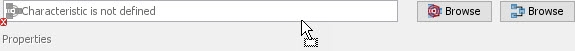
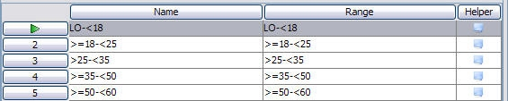
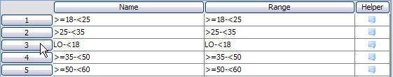
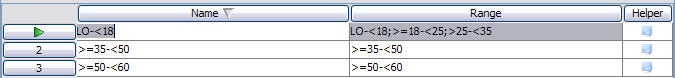
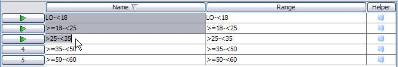
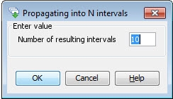

Class Sets
A Class Set is a collection of intervals. Each interval represents a range of discrete values in a data characteristic.
Each interval has a name and a range (or number of ranges). The range determines the data values that are represented by the interval name. Each range can be a single discrete value or a range of values defined by a lower and upper value.
Class Sets have many applications but are predominantly used for scoring elements in scorecards and for segmentation.
An example of a Class Set is displayed below:
Two types of Class Set can be created, a Class Set that is based on a:
- Logical Data Model characteristic
- Boolean Expression
- Derived Data Script
- Treatment Table Design - Execution Script
- User Defined Functions
- Policy Rule
|
A Logical Data Model Class Set is only supported in the following components: |
- Logical Data Source Characteristic
A Logical Data Model Class Set is a Class Set that is based on a Logical Data Model leaf characteristic. However if this happens to be an array, only the array container rather than an instance of the Characteristic can be selected.
As a direct result, this type of Class Set can be used against any Logical Data Source characteristic that is based on the mapped Logical Data Model.
|
The following is an example of a Logical Data Model Class Set. An 'Age' Class Set that has been based on a Logical Data Model can be re-used against the age of all applicants that use this Logical Data Model rather than needing to create a individual Class Set for each Logical Data Source characteristic. The following diagram illustrates this: |
| Both static and dynamic arrays are supported in the Logical Data Model Class Set. |
A Logical Data Source Class Set is based on a single instance of a characteristic.
Classing used for scoring
A Scorecard will allocate score values to each interval in a Class Set used in the Scorecard. The scores are added together to provide a total score once all the elements within a Scorecard have been processed. Using a Class Set, data that requires the same score to be allocated can be grouped together. For example, using the Residential Status characteristic the following Class Set could be created:
| Internal Name | Range | Score allocated in Scorecard: 'Risk Scorecard' |
|---|---|---|
|
Home Owner |
"HO" |
20 |
|
Tenant |
"T" |
-10 |
|
Living with Parents |
"LWP" |
15 |
|
Not Given, Others |
"NG"; "X" |
0 |
Classing used for segmentation
For segmentation purposes, data will be grouped in the way it needs to be processed. Segments of the population relating to each interval are routed down different pathways, allowing different actions/treatments to be applied to them. For example, using the Residential Status characteristic the following Class Set could be created:
| Interval Name | Range | Leads to Action |
|---|---|---|
|
Home Owner |
"HO" |
Send Mail Pack A |
|
Tenant, Living with Parents |
"T"; "LWP" |
Send Mail Pack B |
|
Not Given, Others |
"NG"; "X" |
No mailing |
A Class set is a collection of intervals. Each interval represents a range of discrete values in a data characteristic.
A Class Set can be created from the Explorer window.
| You will only be able to add a component type that has been allowed for the selected folder. If it is not allowed, it will not be listed and therefore cannot be selected. |
To create a Class Set
- From the Explorer window, right click at the required folder level and select Add a component.
- Select Class Set from the list of available components.
- In the Create a Component screen, enter the name of the Class Set.
- Select the Open new components in component editor check box.
- Click on the OK button.
The Class Set editor will open allowing you to select a characteristic and create intervals.
The Class Set name will be listed in the Explorer window under the selected folder level. The component is identified by the icon.
If you do not wish the editor to open, keep the check box de-selected. From the Explorer window, right click on the Class Set and select Open.
| A Class set can be created as an embedded component from within other components for example Scorecards, Matrices or Segmentation Trees. |
Once you have created a Class Set, you will need to Open the Class Set and then edit it:
Before you can create any intervals in a Class Set, you must first select a characteristic. The intervals will represent groupings of the discrete data values within the selected characteristic.
To select a discrete characteristic
- Click on the Logical Data Source Browse button to select a characteristic.
The Select Characteristic dialog will open and list all the referenced Logical Data Sources that can be used by this Class Set. - In the Search field
 , type the word or part of a word that makes up the name of the characteristic.
, type the word or part of a word that makes up the name of the characteristic.
The Select Characteristic dialog will focus in on a particular characteristic or set of characteristics that match this word. - Select the characteristic you require.

| If the Select Characteristic dialog is displaying the characteristics in a tree view, the Logical Data Source will need to be fully expanded to see all the characteristics that match the word(s). |
| If the characteristic you have selected is an array characteristic, the Select Characteristic Array Element(s) dialog will open and you will need to type in the index of the static array. |
- Type a value in the Index Field.
- Click on the OK button.
- The Select Characteristic dialog closes and the characteristic you have selected is added to the Class Set.
Information on the properties of the characteristic that you have assigned to the Class Set will be displayed, for example:
In addition, information on the binding type will be displayed in the Properties window of the Class Set.
| All the Logical Data Sources that are available to you are also listed in the Resources window. If you know which Logical Data Source contains the characteristic you require, you can drag and drop the Logical Data Source onto the characteristic box in the Class Set editor.  The Select Characteristic dialog will be displayed with the characteristics contained in the Logical Data Source you have selected. Select the characteristic you require. |
You can now create the required intervals.
To select a Logical Data Model characteristic
- Click on the Logical Data Model Browse button to select a Logical Data Model characteristic.
The Select Characteristic dialog will open and list all the referenced Logical Data Models that can be used by this Class Set. - In the Search field , type the word or part of a word that makes up the name of the characteristic.
The Select Characteristic dialog will focus in on a particular characteristic or set of characteristics that match this word. - Select the leaf characteristic or array container you require.
| If the Select Characteristic dialog is displaying the characteristics in a tree view, the Logical Data Model will need to be fully expanded to see all the characteristics that match the word(s). |
| The OK button will remain inactive until a array container is selected. |
- Click on the OK button.
- The Select Characteristic dialog closes and the characteristic you have selected is added to the Class Set.
Information on the properties of the characteristic that you have assigned to the Class Set will be displayed, for example:
In addition, information on the binding type will be displayed in the Properties window of the Class Set.
You can now create the required intervals.
Intervals in a Class Set represent groupings of discrete values in a data characteristic. The interval can represent a single value or a range of values defined by upper and lower values or combinations of values and/or ranges.
Before you can create intervals you must have first selected a characteristic on which the interval values will be based.
To create Class Set intervals
- Click on the add interval icon in the toolbar. A new row will be added to the table with a default name of 'Interval'.
- In the Name column, over type 'Interval' with a unique name.
- Enter a range for the row. The Class Set editor will not allow you to enter an entry that is not appropriate for the characteristic.
- Repeat steps 1 to 3 for each interval required.
|
For numeric values, the range can be a single discrete value or a range of values defined by a lower value and an upper value e.g. 20-30. By default, the lower value is included in the range and the upper value is excluded. When you type in the range you can simply enter lower value-upper value as in the 20-30 example above, and then select enter on the keyboard. Using the default settings, this range will then appear as >=20-<30. Alternatively you can type in the operators that determine whether the value(s) are included or excluded. For help on entering range values, you can click on the Range Helper icon For characteristics, ranges should be entered with a ;, e.g. a-g;j;l. The system will amend this as follows "a-g"; "j"; "l". |

{kind=link}
{kind=link}
{kind=link}
{kind=link}
{kind=link}
{kind=link}
{kind=link}
{kind=link}
{kind=link}
{kind=link}
{kind=link}
{kind=link}
You can still edit and move intervals after they have been created.
After creation, intervals can be edited and new intervals can be created from those already created. The options available are:
Once Class Set intervals have been created, it is possible to move the order in which they are listed in the Class Set.
The order in which the intervals are listed in the Class Set is the order in which they are displayed/processed when the Class Set is used.
To move an interval
- Click on the row number for the required interval. The interval will be marked with a green arrow:

- Drag and drop to the required position. In the example below, the interval LO-<18 has been dragged from position 1 and dropped into position 3:

{kind=link}
{kind=link}
The order in which the Class Set intervals are listed is the order in which they will be displayed. It may therefore be necessary to insert an interval into a list of intervals already created.
To insert an interval
- Click on an existing interval that you wish to insert above.
- Click on the insert interval icon on the toolbar.
{kind=link}
A new interval will be created above the selected interval.
Where a single interval represents a number of ranges of values, it is possible to split the interval so that each range is represented by a separate interval. This is the opposite functionality to combining intervals.
To split an interval containing multiple ranges
- Click on an interval that has a number of ranges defined for it.

- Click on the split intervals icon on the toolbar.
The interval will be split with a separate interval created for each range:

{kind=link}
{kind=link}
{kind=link}
The Class Set editor uses the ranges of the original interval to produce the names for the new intervals.
For more information, refer to Split an interval into a number of new intervals and Divide interval into new fixed intervals topics.
In a numeric Class Set, you can create a number of new intervals of the same range width as an existing interval by using Propagate.
| For example, if you select to propagate the interval >=10-<20, to create 3 new intervals, this will create: >=20-<30 >=30-<40 >=40-<50 |
To propagate an interval
- Select the interval you wish to propagate.
- Click the Propagate selected intervals icon on the toolbar.
- Enter the required number of new intervals in the Propagating into N intervals dialog.

- Click the OK button.
{kind=link}
{kind=link}
The entered number of intervals will be created and listed under the original interval in the list.
Once the user has successfully created a Class Set, the user will be able to test it using the Test Project, for batch testing or Interactive Tester.
The user can test a Class Set either by manually typing in data for the input characteristics referenced in the Class Set or by performing a test against a known data source.
To perform an interactive test
To test a Class Set manually by entering data into the relevant fields for the input characteristics, use the Interactive Tester.
To perform a Batch Test (Test Project)
To test a Class Set using data from a .csv file, from the Explorer window, right click on the component and select New Test Project to use the Batch Tester.